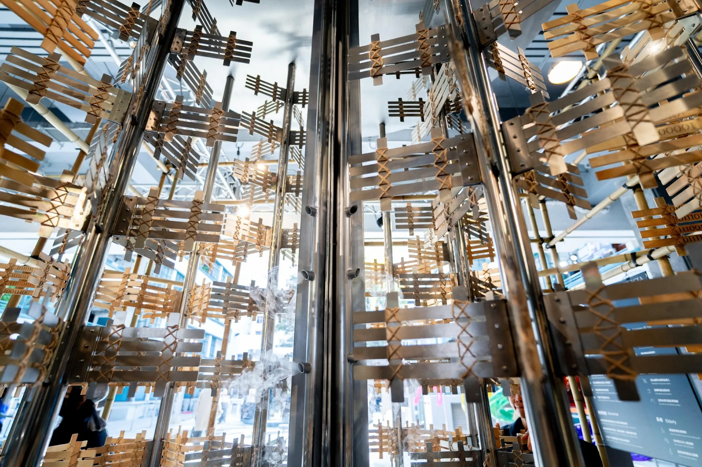
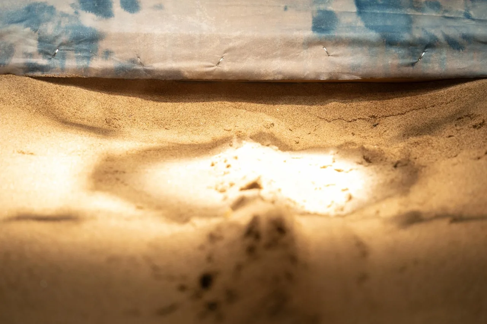
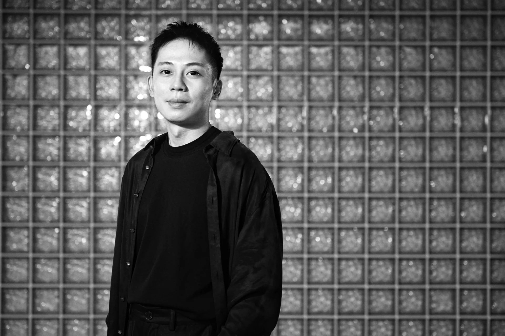

藝術家・策展人
我的藝術創作以人們對物理溫度的感知及物性敘事為主要媒介。在展覽策劃方面，我關注演算法介入如何重建身份的理解，並以文化遺產場所的田野研究作為策展起點。
中國香港
藝術創作與策展實踐15
此類別暫無作品。
溫度、物性敘事與記憶的重塑。


教育、獎項及策展經歷
內容未能載入。請重新整理頁面。 / Content could not be loaded. Please refresh.